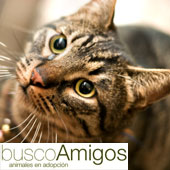
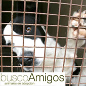
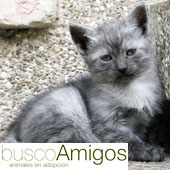

Busco Amigos
¿Por qué Adoptarlos?
Galeria de Amigos
Contacto
Busco Amigos
¿Por qué Adoptarlos?
Galeria de Amigos
Contacto
¿Qué Hacemos?
Funcionan como enlace entre albergues de animales abandonados y personas que quieran adoptarlos. Según la oferta de los albergues y las necesidades y capacidades de los futuros dueños, hacen el match perfecto.

¿Como Funciona?
De igual forma, sólo trabajan con albergues serios, que mantienen en perfectas condiciones a los animalitos abandonados. Lo hacen en forma física y ahora quieren su sitio en internet, para trabajar desde ahí. Es una asociación sin fines de lucro, por lo que subsisten de colaboraciones voluntarias.
¿Desde cuándo funciona?
Busco Amigos tiene 3 años de existencia, con éxito total. Han encontrado hogar para más de 1000 amigos.

¿Hacia dónde quieren llegar?
Busco Amigo quiere seguir creciendo y encontrar muchos más amigos. Esperan que el sitio sea una forma de crecimiento, tanto para hacer más amigos como para captar más recursos.